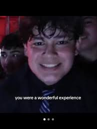
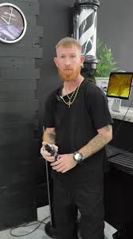

NICO FAI CHANDRA

There is the “Group Leader”, the “Second in Command”, “Tomato Boy,” and “Turkish Quandale Dingle” also known as “Annoying Tongue Kid” and the “Random.” People have decided that the Turkish quandle dingle kid is not a part of the group, and is trying desperately to fit in by doing dance moves in an attempt to impress the group leader. The Second in Command is believed to have the power to overthrow the group leader, but due to his intense loyalty to the group leader, he won’t. Tomato Boy is known for being the group hype man, as seen during the dance-off between the group leader and Turkish quandale dingle. Also as the group was dancing to the song “Carnival”. He is also known for his loyalty to the group.
The Group Leader is known for keeping the group together and is seen leading the group in dancing in the main scene while “Carnival” is playing. He is known for his immense charisma and is one of the few members to do interviews after the tik tok rizz party. The Random is not a part of the group, however, he believes he is despite the group members having no idea who he is. There was a tik tok rizz party war led by Tomato Boy when he teamed up with the Random, and started their training arc by mewing together for a month.
The TikTok rizz party, to the confusion of many, has become famous with its very in-depth lore.
TikTok Rizz Party, which later inspired the TikTok Rizz Party 'Carnival' Boys, refers to a photo of a flyer left on someone's car that advertised a so-called "TikTok Rizz Party" with a free cover. The original image was taken sometime before May 18th, 2023, and it spread on TikTok, Instagram and Twitter / X. Memes were made that referenced the TikTok Rizz Party going into late 2023, which mostly labeled the party as "cringe" and "corny" due to its use of slang buzzwords. In March 2024, a video of teenage boys singing "Carnival" by Kanye West went viral on TikTok and many called the video the TikTok Rizz Party.

Brain Rot or Brainrot is a slang term used to describe content that has little to no artistic, educational or substantive value, painting it as having a negative impact on the viewer and thus leading to the degradation and "rot" of their brain. In relation, the term is used to refer to pieces of "brain rot content" that a person cannot stop thinking about, leading to further brain rot, such as regularly repeating the Skibidi Toilet song. Although the exact origins of the term are unknown, it has been used online since as early as 2007, becoming increasingly popularized throughout the 2010s and 2020s. On October 24th, TikToker[7] @neptunezz.x posted a video of some kids singing the Skibidi Toilet song captioned "actual brain rot," garnering over 70,000 views in a month (shown below, left). On November 6th, TikToker[8] @vexbolts posted a video using the term, garnering over 100,000 views in two days (shown below, right).